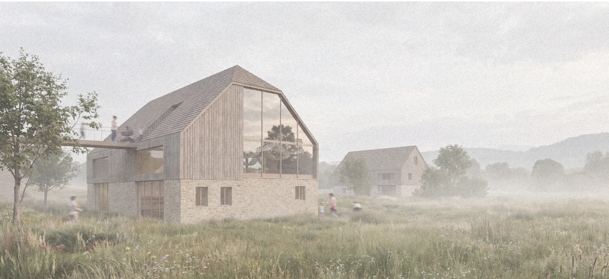

BAD MITTERNDORF, STEIERMARK
UMNUTZUNG / AUGUST 2026
PfarrerstallBestand. Begegnung. Zukunft.

01 / DIE AUFGABE
Weiterbauen.
Raum für Miteinander.
Der Pfarrerstall in Bad Mitterndorf soll zu einem vielseitig nutzbaren Ort für die Pfarrgemeinde und die Bevölkerung werden. Drei Entwürfe untersuchen, wie der Bestand mit neuem Leben gefüllt werden kann.
Gemeinsam ist ihnen die klare Verteilung der Nutzungen über die Geschosse. Sichtbare Holzkonstruktionen und eine warme Materialität verbinden den Charakter des Hauses mit neuen Räumen für Begegnung, Kultur und Alltag.
- Ort
- Bad Mitterndorf
- Aufgabe
- Umnutzung im Bestand
- Entwurf
- Judith Steinacher
- Stand
- August 2026
Einblicke in den BestandFotografien & Bestandsplan
Der Ausgangspunkt der Entwürfe: Eindrücke vom bestehenden Pfarrerstall.
02 / DREI ENTWÜRFE
Ein Haus.
Drei Perspektiven.
Drei Nutzungskonzepte –
ein gemeinsamer Ausgangspunkt.
Die Nutzungskonzepte im Vergleich +
| Geschoss | 01 · Gemeinschaft | 02 · Wohnen | 03 · Arbeiten |
|---|---|---|---|
| Erdgeschoss | Café, Kindermesse, Musikerstammtisch | Wohnung | Café, Empfang für Seminare |
| Obergeschoss | Veranstaltungssaal | Café & Veranstaltung | Coworking |
| Oberster Bereich | Orgel-Lab im Halbgeschoss | Bibliothek im Halbgeschoss | Veranstaltung & Ausstellung |
03 / PLÄNE & RÄUME
Den Entwurf erkunden.
Raumatmosphären
Visualisierungen · Entwurf 01
04 / DIE AUSARBEITUNG
Alles im Zusammenhang.
Pro Entwurf separat herunterladen:
A3-Mappe mit Deckblatt und Originalplakat.